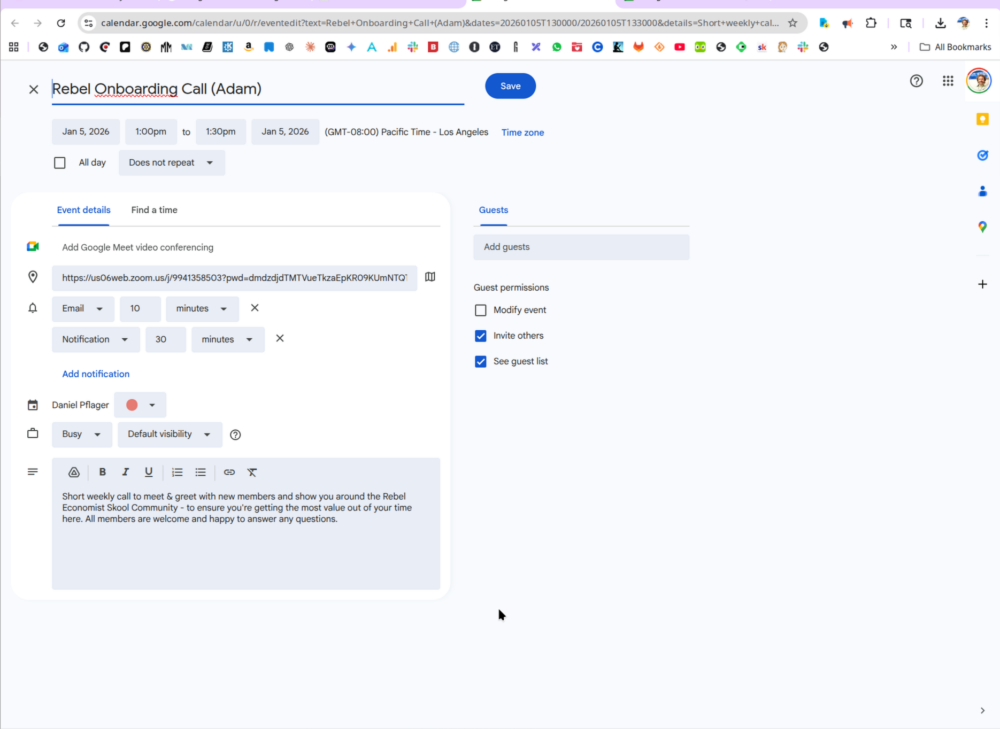
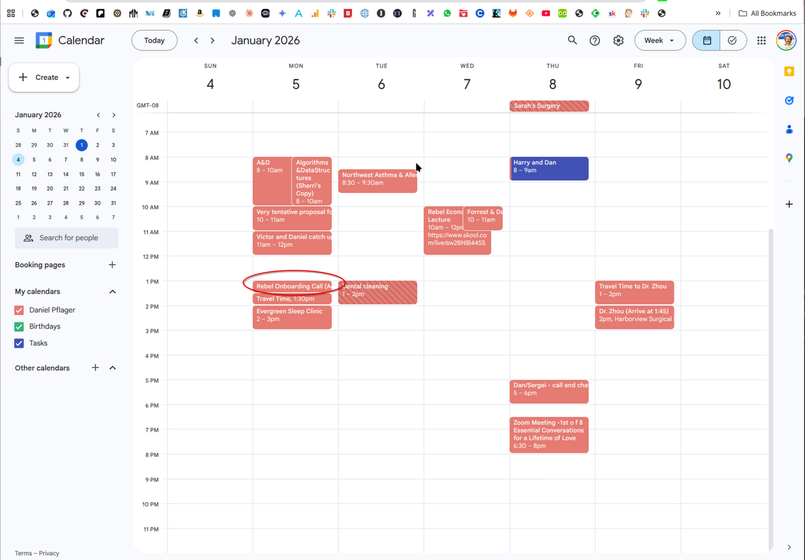
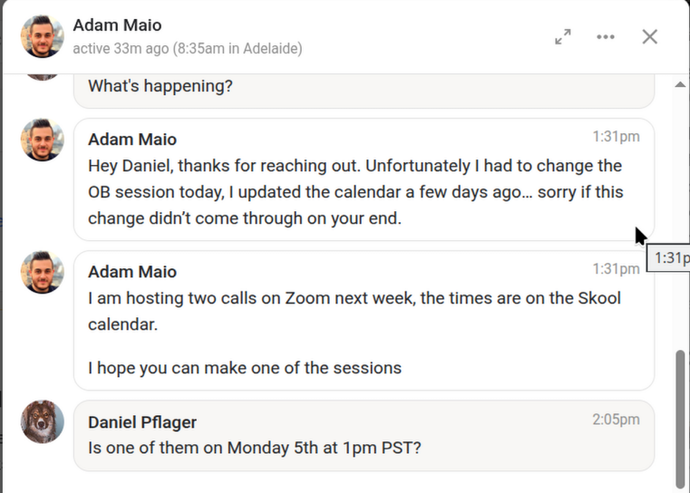
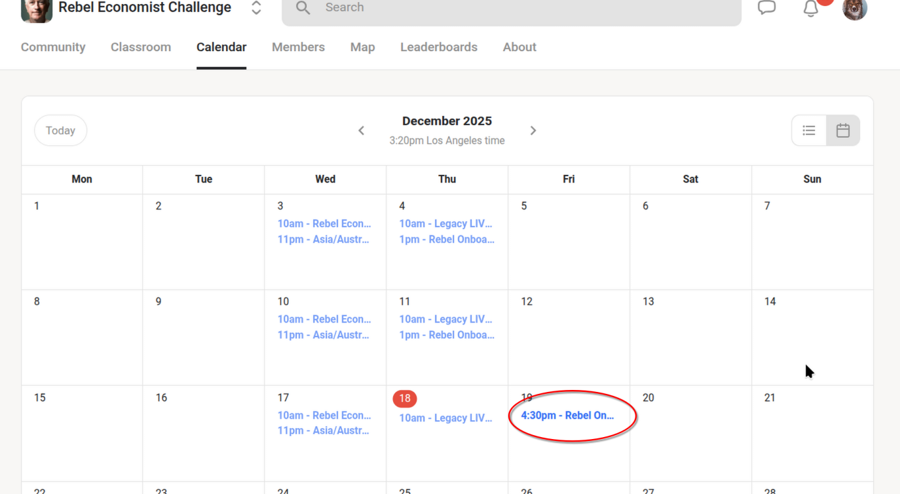
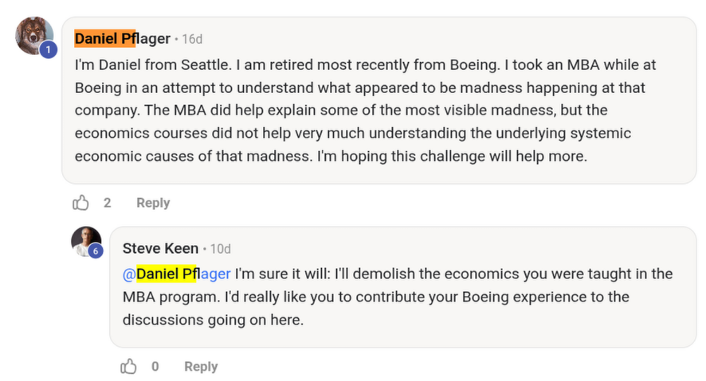
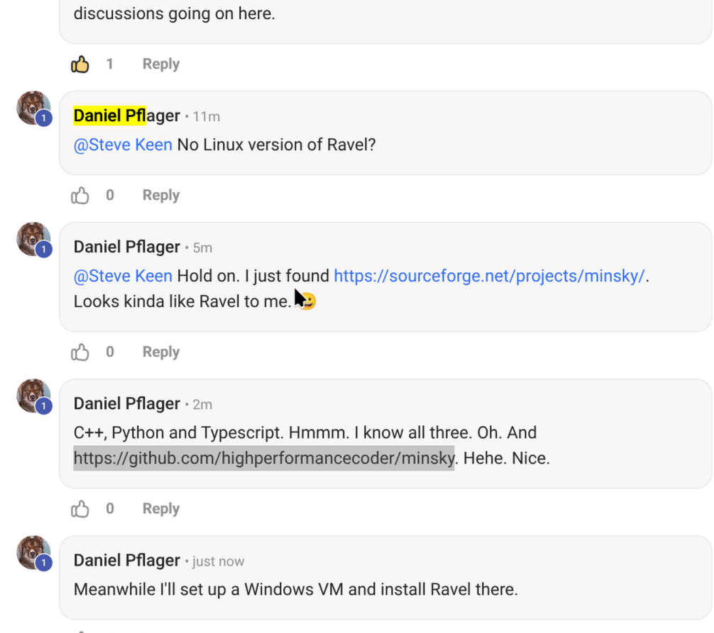

My first blog entry
A headline/comment/summary of what this blog entry is about.
2025-06-01 21:22 (UTC-7) by Daniel
I did a .fork of https://github.com/pflagerd/blog-bootstrap
TODO
What needs doing everywhere ...
2026-01-01 13:31 (UTC-8) by Daniel
Work Through the Course
Check the Calendar
Surf some live call recordings
Week 4 - Role of Government in Money Creation?"
Rebel Economist Challenge (static local snapshot)
2025-12-30 16:36 (UTC-8) by Daniel
I watched this next:
VIDEO
I seem to be missing onboarding calls all over the place.
Second time I've tried to attend and been disappointed.
2026-01-01 13:20 (UTC-8) by Daniel
Here's a snapshot of the calendar showing the next opportunity:
Clicking on the Jan 5th link, I see this:
Clicking on "ADD TO CALENDAR" and I see:

Clicking on Save I see:

Checking a private message on Skool I see:

Week 4 - What is Money? And does it matter?"
Rebel Economist Challenge (static local snapshot)
2025-12-30 16:36 (UTC-8) by Daniel
I watched this next:
VIDEO
Week 4 - Banks & Money Creation"
Rebel Economist Challenge (static local snapshot)
2025-12-29 20:05 (UTC-8) by Daniel
I watched this next:
VIDEO
Week 3 - Origins of "Supply and Demand"
Rebel Economist Challenge (static local snapshot)
2025-12-29 15:12 (UTC-8) by Daniel
I watched this next:
VIDEO
Week 3 - When Did Economics Go Wrong? Part 2"
Rebel Economist Challenge (static local snapshot)
2025-12-27 19:49 (UTC-8) by Daniel
I watched this next:
VIDEO
Week 3 - When Did Economics Go Wrong? Part 1"
Rebel Economist Challenge (static local snapshot)
2025-12-27 19:08 (UTC-8) by Daniel
I watched this next:
VIDEO
Week 2 - Watch "Crazy Assumptions"
Rebel Economist Challenge (static local snapshot)
2025-12-24 20:19 (UTC-8) by Daniel
I watched this next:
VIDEO
Week 2 - Watch "Why New Economics"
Rebel Economist Challenge (static local snapshot)
2025-12-24 20:19 (UTC-8) by Daniel
I watched this next:
VIDEO
World Bank Global GDP (GWP - "Gross World Product")
The Optimum Quantity of Money (Friedman - a joke)
Week 2 - Watch "Why We Need A New Economics"
Rebel Economist Challenge (static local snapshot)
2025-12-24 20:19 (UTC-8) by Daniel
I watched this next:
VIDEO
Bank of England Money Creation
Week 1 - Watch "Roaring 20s/Great Depression"
Rebel Economist Challenge (static local snapshot)
2025-12-24 16:45 (UTC-8) by Daniel
I watched this next:
VIDEO
Week 1 - Watch "Mixed Fiat Credit"
Rebel Economist Challenge (static local snapshot)
2025-12-24 10:50 (UTC-8) by Daniel
I watched this next:
VIDEO
Week 1 - Watch "Fiat Money Creation"
Rebel Economist Challenge (static local snapshot)
2025-12-22 20:50 (UTC-8) by Daniel
I watched this next:
VIDEO
Week 1 - Watch "Money in Macro"
Rebel Economist Challenge (static local snapshot)
2025-12-22 20:50 (UTC-8) by Daniel
I watched this next:
VIDEO
Week 1 - Watch "Real World Money"
Rebel Economist Challenge (static local snapshot)
2025-12-22 20:50 (UTC-8) by Daniel
I watched this next:
VIDEO
The Theory of the Monetary Circuit (Graziani 1990)
Money Whence it Came Where it Went (JK Galbraith)
Basics of Banking: Loans Create a Lot More Than Deposits (John Carney. Static Local Snapshot)
Week 1 - Watch "Money Creation"
Rebel Economist Challenge (static local snapshot)
2025-12-22 20:00 (UTC-8) by Daniel
I watched this next:
VIDEO
Week 1 - Watch "Energy In Production"
Rebel Economist Challenge (static local snapshot)
2025-12-20 20:03 (UTC-8) by Daniel
I watched this next:
VIDEO
Week 1 - Watch "Where Economics Went Wrong"
Rebel Economist Challenge (static local snapshot)
2025-12-18 14:54 (UTC-8) by Daniel
I watched this next:
VIDEO
Week 1 - pdfs that came with "Why Listen to Me?"
There were two pdfs to read.
2025-12-18 18:41 (UTC-8) by Daniel
Robert Solow's "Dumb and Dumber"
Paul Romer's "Trouble with Macro"
Week 1 - Watch "Why Listen to Me?"
Rebel Economist Challenge (static local snapshot)
2025-12-18 14:54 (UTC-8) by Daniel
I watched this:
VIDEO
Dr. Keen asked us to answer two questions:
Who do you think led economics astray, and when?
What did this author(s) do to mislead economics?
Besides textbooks from my MBA, which I finished in 2018, I have read Wealth of Nations by Adam Smith and Economics in One Lesson by Henry Hazlitt. The textbooks I read from my MBA coursework seemed completely out of touch with reality when I read them, and I would say that their theories are way too far-abstracted from the real world to be useful. Part of that is that they made so many assumptions which just can't (and don't) match reality even superficially.
Wealth of Nations seemed kind of benign as an historical account of a snapshot in history, but it also seemed way obsolete. Economics in One Lesson seemed more relevant, but seemed to rely way too much on capitalists behaving in good faith, which just doesn't seem to match human nature. For example it doesn't vaguely match even casual observation of tech companies. It didn't call out the risk of Oligarchy or Monopoly loud enough for me to remember in any case.
Week 1 - SECOND: How to use Skool.
Rebel Economist Challenge (static local snapshot)
2025-12-18 13:29 (UTC-8) by Daniel
I went to the calendar and signed up for an onboarding meeting:

Week 1 - I create a Windows Server VM and install Ravel there
Ravel appears to be Minsky
2025-12-18 14:31 (UTC-8) by Daniel

I found https://sourceforge.net/projects/minsky/
I found https://github.com/highperformancecoder/minsky
I created a VM called win2k16a-ravel

Week 1 - FIRST: Introduce Yourself.
Rebel Economist Challenge (static local snapshot)
2025-12-18 13:29 (UTC-8) by Daniel
My first blog entry
Put a headline/comment/summary of what this blog entry is about here.
2025-12-18 13:00:22 (UTC-8) by Daniel
I did a .fork of https://github.com/pflagerd/blog-bootstrap